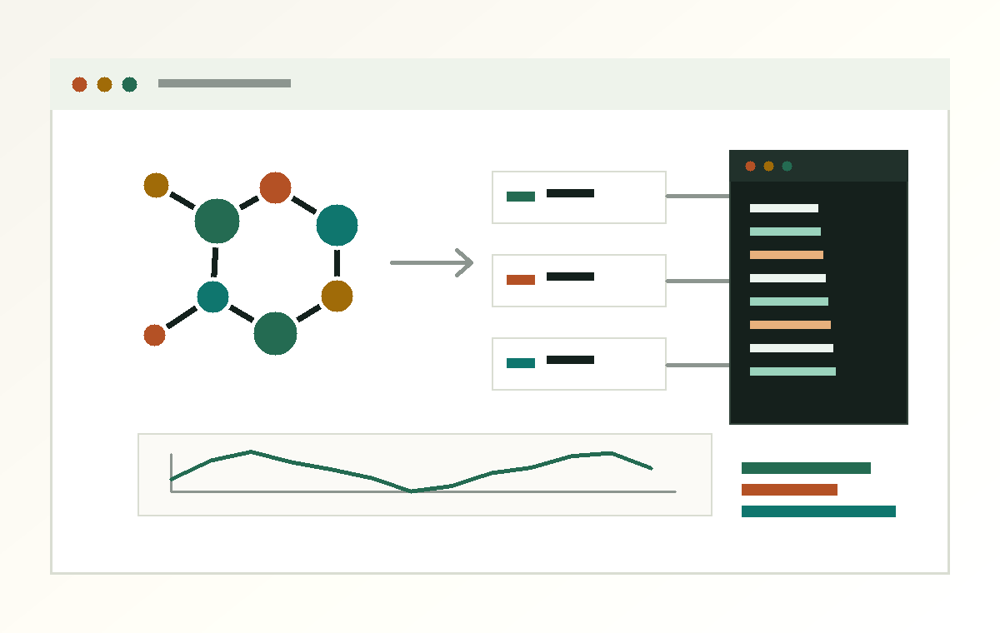

Right method for the system
Organic, metallic, protein-like, and large ML-potential cases take different paths, even when the user asks the same plain-language question.
Claude Code skills for computational chemistry
Two sibling skills route simulation requests through ASE, AmberTools, MACE, xTB, and Gaussian with explicit limits, install checks, and validation rules before any calculation starts.

Why it exists
Organic, metallic, protein-like, and large ML-potential cases take different paths, even when the user asks the same plain-language question.
xTB size cliffs, Gaussian license gates, Amber scope, and ML potential uncertainty are surfaced as part of the answer.
MACE MD is cross-validated against GFN2-xTB every 1 ps by default and aborts when the force error crosses the documented threshold.
Sibling skills
ASE, xTB, MACE, Gaussian
Atomistic and molecular simulation through ASE with seven backends, explicit Gaussian method inputs, and ML potential validation.
AmberTools, pmemd, cpptraj
Amber-native MD for workflows where restart handling, T-REMD, implicit solvent, cpptraj analysis, and MMPBSA matter.
Backends
Install
conda install -c conda-forge ase tblite-python mdanalysis matplotlib numpy
python ase-chemist/scripts/check_env.pyconda install -c conda-forge ambertools
python amber-chemist/scripts/check_env.py